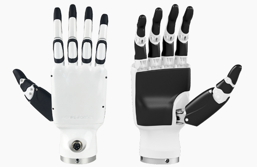

因时DFX灵巧手开发
DFX 灵巧手介绍
G1可搭载 Inspire Robotics (RH56DFX) 的仿人五指灵巧手，该灵巧手具有6个自由度和12个运动关节，可以模拟人手实现复杂动作。

控制方式
因时机械手官方SDK通过串口进行通讯，G1提供一个USB转串口模块，用户可以将该USB插在G1开发计算单元(PC2)上进行通讯控制灵巧手。此时端口通常左手为/dev/ttyUSB1，右手为/dev/ttyUSB2。
- 使用因时官方SDK控制
用户可以根据因时灵巧手官方通讯协议自行编写程序控制灵巧手。
- 使用宇树灵巧手SDK控制
G1通信建立在DDS框架之上。为便于使用unitree_sdk2进行控制灵巧手。宇树提供将串口收发的数据转为DDS消息的示例程序(下载链接见文档底部)。
宇树SDK接口说明
用户向 "rt/inspire/cmd" 话题发送 "unitree_go::msg::dds::MotorCmds_" 消息控制灵巧手。
从 "rt/inspire/state" 话题接受 "unitree_go::msg::dds::MotorStates_" 消息获取灵巧手状态。
graph LR
A(user) --rt/inspire/cmd--> B(G1)
B --rt/inspire/state--> A
IDL数据格式
采用数组格式的电机数据，内部包含双手12个电机数据。具体MotorCmd_.idl和MotorState_.idl的格式见 底层服务接口
Note
当前灵巧手只支持关节控制，即在idl格式中只有参数 q 有意义。其他保留。
# namespace unitree_go::msg::dds_
# unitree_go::msg::dds_::MotorCmds_
struct MotorCmds_
{
sequence<unitree_go::msg::dds_::MotorCmd_> cmds;
};
# unitree_go::msg::dds_::MotorStates_
struct MotorCmds_
{
sequence<unitree_go::msg::dds_::MotorState> states;
};
- IDL中的关节顺序
| Id | 0 | 1 | 2 | 3 | 4 | 5 | 6 | 7 | 8 | 9 | 10 | 11 |
| Joint | Right Hand | Left Hand | ||||||||||
| pinky | ring | middle | index | thumb-bend | thumb-rotation | pinky | ring | middle | index | thumb-bend | thumb-rotation | |
示例程序
以下是示例中封装好的灵巧手控制接口。
/**
* @brief Unitree H1 Hand Controller
* The user can subscribe to "rt/inspire/state" to get the current state of the hand and publish to "rt/inspire/cmd" to control the hand.
*
* IDL Types
* user ---(unitree_go::msg::dds_::MotorCmds_)---> "rt/inspire/cmd"
* user <--(unitree_go::msg::dds_::MotorStates_)-- "rt/inspire/state"
*
* @attention Currently the hand only supports position control, which means only the `q` field in idl is used.
*/
class H1HandController
{
public:
H1HandController()
{
this->InitDDS_();
}
/**
* @brief Control the hand to a specific label
*/
void ctrl(std::string label)
{
if(labels.find(label) != labels.end())
{
this->ctrl(labels[label], labels[label]);
}
else
{
std::cout << "Invalid label: " << label << std::endl;
}
}
/**
* @brief Move the fingers to the specified angles
*
* @note The angles should be in the range [0, 1]
* 0: close 1: open
*/
void ctrl(
const Eigen::Matrix<float, 6, 1>& right_angles,
const Eigen::Matrix<float, 6, 1>& left_angles)
{
for(size_t i(0); i<6; i++)
{
cmd.cmds()[i].q() = right_angles(i);
cmd.cmds()[i+6].q() = left_angles(i);
}
handcmd->Write(cmd);
}
/**
* @brief Get the right hand angles
*
* Joint order: [pinky, ring, middle, index, thumb_bend, thumb_rotation]
*/
Eigen::Matrix<float, 6, 1> getRightQ()
{
std::lock_guard<std::mutex> lock(mtx);
Eigen::Matrix<float, 6, 1> q;
for(size_t i(0); i<6; i++)
{
q(i) = state.states()[i].q();
}
return q;
}
/**
* @brief Get the left hand angles
*
* Joint order: [pinky, ring, middle, index, thumb_bend, thumb_rotation]
*/
Eigen::Matrix<float, 6, 1> getLeftQ()
{
std::lock_guard<std::mutex> lock(mtx);
Eigen::Matrix<float, 6, 1> q;
for(size_t i(0); i<6; i++)
{
q(i) = state.states()[i+6].q();
}
return q;
}
unitree_go::msg::dds_::MotorCmds_ cmd;
unitree_go::msg::dds_::MotorStates_ state;
private:
void InitDDS_()
{
handcmd = std::make_shared<unitree::robot::ChannelPublisher<unitree_go::msg::dds_::MotorCmds_>>(
"rt/inspire/cmd");
handcmd->InitChannel();
cmd.cmds().resize(12);
handstate = std::make_shared<unitree::robot::ChannelSubscriber<unitree_go::msg::dds_::MotorStates_>>(
"rt/inspire/state");
handstate->InitChannel([this](const void *message){
std::lock_guard<std::mutex> lock(mtx);
state = *(unitree_go::msg::dds_::MotorStates_*)message;
});
state.states().resize(12);
}
// DDS parameters
std::mutex mtx;
unitree::robot::ChannelPublisherPtr<unitree_go::msg::dds_::MotorCmds_> handcmd;
unitree::robot::ChannelSubscriberPtr<unitree_go::msg::dds_::MotorStates_> handstate;
// Saved labels
std::unordered_map<std::string, Eigen::Matrix<float, 6, 1>> labels = {
{"open", Eigen::Matrix<float, 6, 1>::Ones()},
{"close", Eigen::Matrix<float, 6, 1>::Zero()},
{"half", Eigen::Matrix<float, 6, 1>::Constant(0.5)},
};
};
程序下载
| 日期 | 更新说明 | 下载地址 |
|---|---|---|
| 2024-5-7 | 初版(复用H1) | 点击下载 |
| 2025-8-28 | github |